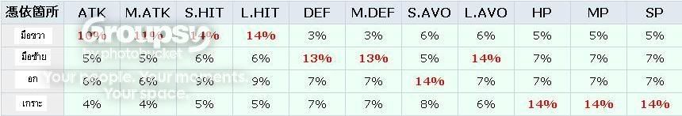

babinnick2 เขียน:ขอถามหน่อยนะครับไม่รู้มีคนถามยัง
ให้โกเลมรับซื้อของยังไงหรอครับ
แค่ดับเบิ้ลคลิกที่โกเล็มครับ
กดให้รับซื้อ
แล้วก็ลากๆๆ ไอเท็มไปวางในช่องตั้งราคากะจำนวน
กดโอเค แล้วล็อคเอาท์ด้วยไอคอน
golem logout ครับ
 โดย ECO » อังคาร 11 ก.ย. 2007 9:15 pm
โดย ECO » อังคาร 11 ก.ย. 2007 9:15 pm
babinnick2 เขียน:ขอถามหน่อยนะครับไม่รู้มีคนถามยัง
ให้โกเลมรับซื้อของยังไงหรอครับ
 โดย ECO » พุธ 12 ก.ย. 2007 5:01 am
โดย ECO » พุธ 12 ก.ย. 2007 5:01 am
 โดย ECO » พุธ 12 ก.ย. 2007 8:54 am
โดย ECO » พุธ 12 ก.ย. 2007 8:54 am
 โดย ECO » พุธ 12 ก.ย. 2007 11:42 am
โดย ECO » พุธ 12 ก.ย. 2007 11:42 am
CelesChere เขียน:เดินไปหลายแมพแล้วนะ ส่วนมากมีแต่พวกFruit Wood มันก็มีอยู่ตามแมพรอบๆเมืองหลวงนะค่ะ เยอะหน่อยจะเป็นทางฝั่งเหนือ มี ประมาณ10ต้นได้ แต่กระจายนะ ตอนนี้ก็คีหาแถวนี้แหละ เดินทีหน้ามืดจะเป็นลม ตีไปก็เจอพวกโรคจิตประมาณฉันไม่เอาแต่เธอก็อย่าได้ตีเล่นทิ้งซะงั้น = ='อยากบอกว่ามันน่าเสียดายถ้าพี่ๆน้องๆไม่เอาก็ให้นู่เถอะ ส่วนแมพอื่นไม่รู้เป็นไงบ้างนะแต่สำหรับตอนนี่ฝั่งเมืองหลวงทางเหนือเยอะสุดค่ะ แวะไปตีมาเมื่อกี้45นาทีได้มา 7อัน - -*
 โดย ECO » พุธ 12 ก.ย. 2007 12:25 pm
โดย ECO » พุธ 12 ก.ย. 2007 12:25 pm
thanyapol เขียน:พวกสกิล Soul of ......... เวลาไปสิงคนอื่นนี่ จะเอาความสามารถของเรามาคิดเป็น % แล้วไปบวกเพิ่มให้ผู้ที่ถูกสิง
หรือ
เอาความสามารถของผู้ที่ถูกสิง มา+ ให้ตนเองกันครับ

 โดย ECO » พุธ 12 ก.ย. 2007 7:06 pm
โดย ECO » พุธ 12 ก.ย. 2007 7:06 pm
 โดย ECO » พุธ 12 ก.ย. 2007 7:31 pm
โดย ECO » พุธ 12 ก.ย. 2007 7:31 pm
SoDa เขียน:จีเอ็ม ใจ ร้าย มั่กๆ ๆ มอง ข้าม คำ ถาม เรา ไป เลย อ่ะ แง้ๆ ๆ
******เควสไหนให้ค่าประสบการณ์เยอะๆมั่งค่ะ ตั้งแต่เวล 26 ขึ้นไปน๊า เอาแบบเควสธรรมดาอ่ะ ไม่ใช่เควสประจำอาชีพ******
ตอบ ด้วย จิ จี เอ็ม ใจ ร้าย อ่ะ :cry:
 โดย ECO » พุธ 12 ก.ย. 2007 8:21 pm
โดย ECO » พุธ 12 ก.ย. 2007 8:21 pm
 โดย ECO » พฤหัสฯ. 13 ก.ย. 2007 4:02 pm
โดย ECO » พฤหัสฯ. 13 ก.ย. 2007 4:02 pm
่กำลังดูบอร์ดนี้: ไม่มีสมาชิก และ บุคคลทั่วไป 1 ท่าน